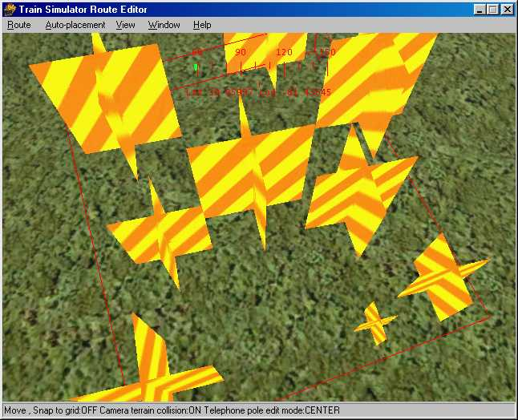
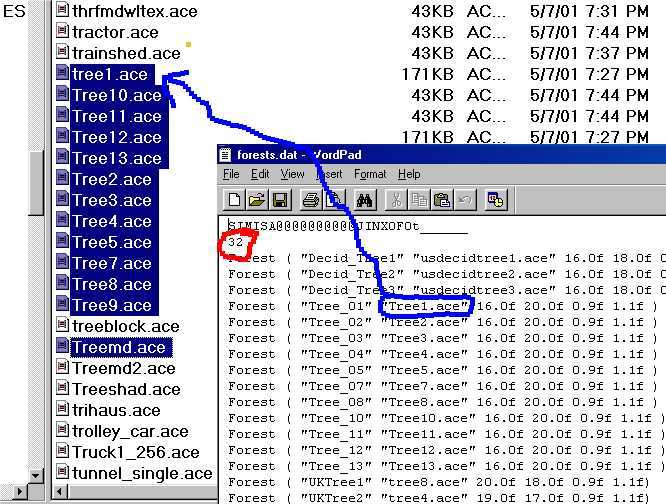
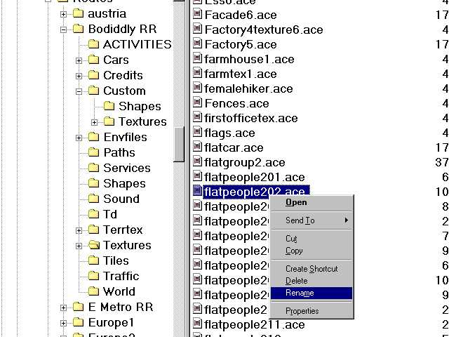
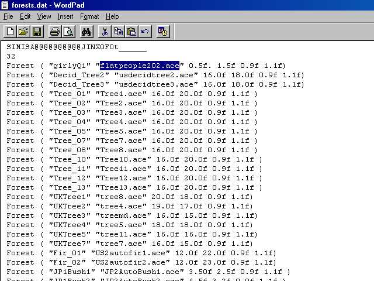
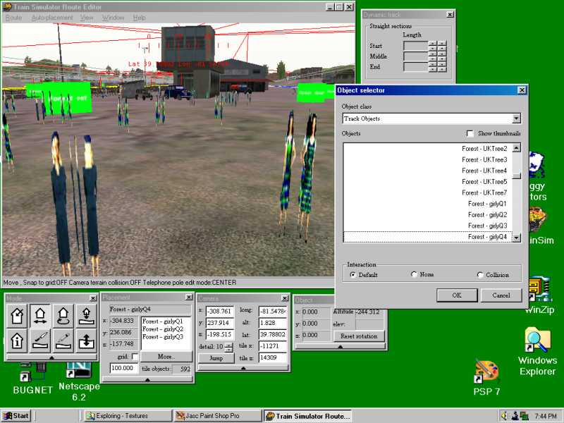
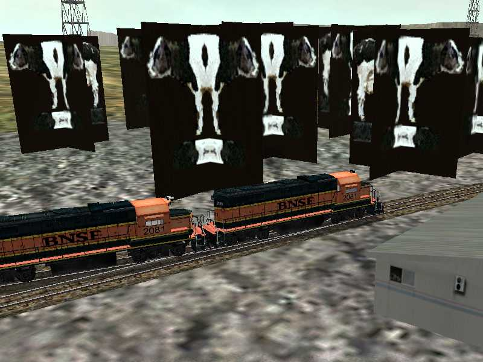

Creating Forests in Route Editor: Understanding the FORESTS.DAT file
by Jim "Sniper" Ward (contributions by Dave Nelson, Lukas Lusser, Joe Morris and Yuri Sos)
Forest 101
I thought I'd put everything I know about forest regions into a single tutorial. First off, they're hard coded, so entering them in the .REF file only screws them up, you have to edit them in the FORESTS.DAT file, and they only show up in the RE object menu as "track objects" (?), no way to change the category.
Forest regions have no .S or .SD files - that's the part that's hard coded. The Forests.dat is only used by the Route Editor - once you've installed a forest from the Route Editor it appears as an item in the World .W file. This entry in the .W file lists the .ace file in use.
Whatever texture you apply will be a simple 2-dimensional cross shape:

This has some obvious disadvantages, It does default to ESD 252, so any ace file you use has to be copied to all the seasonal and snow subfolders to avoid error messages (the forests.dat file is hard-coded to use the seasonal folders), and it looks pretty bad close up, especially from certain angles, depending on which texture you use. The visible distance is problematic sometimes too, they have a tendency to suddenly pop up all at once.
The big advantage is populating large areas with trees, since the shape is so simple, there's no complex lighting & geometry calculations. And it don't matter if there's one or 1000, since they're all the same shape and texture the graphics hardware runs thru the math very quickly, and treats them all as a single object for the lighting and viewing angle calculations. Framerates, baby.
So how to hack it? That's actually the simple part, open Forests.dat in wordpad. There is a number right under the header (32 in this one, circled in red), this is the total number of forest regions, and it has to match however many lines you have. I got up to 39 without errors in my latest, I don't know if there's a limit. Each line is one forest region object, and has six fields in it.

The first one, inside the quotes, "tree01", is the label that shows up in the object menu. The second, "Tree1.ace", is the name of the ace file in \Textures that will be applied to the shape.
After that are 4 numbers. The first is overall width of the cross in meters, the second is height. The last two numbers are scaling multipliers, minimum and maximum scales for the objects. For these, if you want a tree 2 meters high and 1 meter wide, the first numbers would be 1.0f 2.0f. Making the last two numbers 1.0f 1.0f would give a uniform size, all the trees would be 2m high 1m wide. The defaults make them slightly different (0.9f 1.1f) for variety, if you made them 0.5f 2.0f, that would give a maximum multiplier of two and a minimum of one half, so the biggest tree in that region would be 4 meters high, the smallest would be one meter.
So let's get on with hacking this thing already, enough of the explanations. First I find a texture that strikes my fancy, like Jason's palm trees for example.

Hmm, no palm trees in this route, but flat people might texture OK, let's try it. Being a lazy SOB who don't like to type, I right click on the file, select "rename", and instead of renaming it, I just hit CTRL-C. That copies the filename to the clipboard so I don't make a mis\*.*\take when I type it.

I type whatever I'm gonna call this new thing between the quotation marks to replace the original label, then I click-drag to highlight their usdecidtree1.ace, and hit CTRL-V to paste in the name of the ace file. You can type it instead, just make sure you spell it right. Since these are humanoids of the female persuasion, I make them half a meter wide and 1 1/2 meters high. I don't have a pic of Darrel Hannah, so I'm not doing an "attack of the 50 foot woman" here.

Hmm. Looks pretty bad, some experimenting is necessary to see what textures are suitable for this thing. It will apply whatever ace you choose to all four sides of the cross, and the transparency will be applied to each side as well.
Well I'll be a two-headed cow!

Animal, vegetable or mineral, if you're gonna use it as a forest region object you gotta pretend it's a vegetable and copy the main ace file to all the \textures subfolders except \night if they ain't already in there.
So just to clear up the cow-nfusion, think of a forest region as a shape, with the .S file being scaleable, and instead of calling for a specific .ACE file, it will accept whatever ace file names you put in the FORESTS.DAT file. It has a top-secret hidden mystery .SD file that calls for extended shape data of "all seasons", and since you can't find it to edit it, you gotta have whatever .ACE file you use in all the seasonal folders.